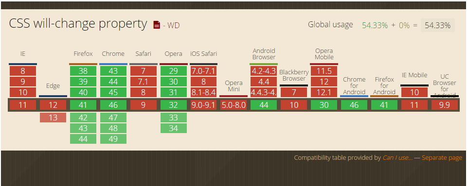

CSS3 will-change属于web标准属性，虽然目前还是草案阶段，但出现已经有些时日了，兼容性这块Chrome/FireFox/Opera都是支持的。

这个属性作用很单纯，就是“增强页面渲染性能”。该属性语法如下：
/* 关键字值 */
will-change: auto;
will-change: scroll-position;
will-change: contents;
will-change: transform; /* <custom-ident>示例 */
will-change: opacity; /* <custom-ident>示例 */
will-change: left, top; /* 两个<animateable-feature>示例 */
/* 全局值 */
will-change: inherit;
will-change: initial;
will-change: unset;
其中：
- auto
重置其他值 - scroll-position
翻滚 - contents
内容要动画或变化 - <custom-ident>
自定义属性，可以是CSS3动画常用属性，但不能是以下这些关键字值：unset, initial, inherit, will-change, auto, scroll-position, 或 contents. - <animateable-feature>
可动画的一些特征值，比方说left, top, margin之类。
就目前而言，使用的基本上都是：
.example {
will-change: transform;
}
will-change虽然可以加速，但是，一定一定要适度使用。那种全局都开启will-change等待模式的做法，无疑是死路一条。
will-change的使用要谨慎，遵循最小化影响原则。
不要这样直接写在默认状态中，因为will-change会一直挂着：
.will-change {
will-change: transform;
transition: transform 0.3s;
}
.will-change:hover {
transform: scale(1.5);
}
可以让父元素hover的时候，声明will-change，这样，移出的时候就会自动remove，触发的范围基本上是有效元素范围。
.will-change-parent:hover .will-change {
will-change: transform;
}
.will-change {
transition: transform 0.3s;
}
.will-change:hover {
transform: scale(1.5);
}
如果使用JS添加will-change, 事件或动画完毕，一定要及时remove。如下示例：
dom.onmousedown = function() {
target.style.willChange = 'transform';
};
dom.onclick = function() {
// target动画哔哩哔哩...
};
target.onanimationend = function() {
// 动画结束回调，移除will-change
this.style.willChange = 'auto';
};